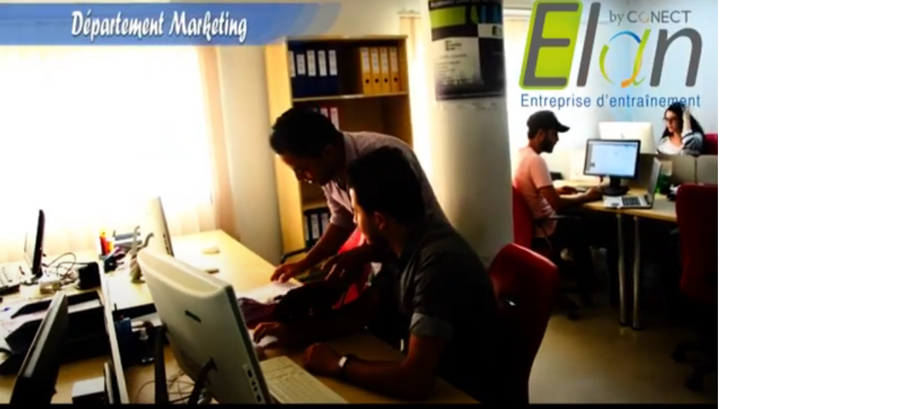

Départements Marketing

- Superviser la rédaction des communiqués et dossiers de presse.
- choisir et concevoir les supports de communication.
- Etudier les moyens de réalisation des panneaux, scénarios de films, CDrom, articles de revue, documents pédagogiques, pages web...